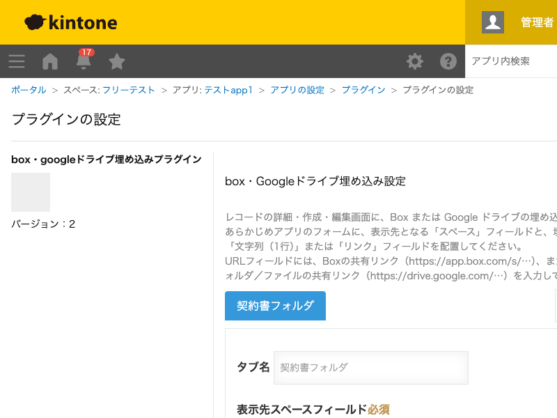

GovAppsプラグイン 安全性を確認できる無料kintoneプラグイン集
URLフィールドに埋め込み用URLを入力すると、レコードの詳細・作成・編集画面の指定したスペースに、 BoxまたはGoogleドライブの埋め込みビューを表示します。契約書やプロジェクト資料のフォルダを、 kintoneのレコード画面から直接確認できるようになります。
案件レコードに「契約書フォルダURL」フィールドを持たせ、Boxの共有リンクを入力しておくと、レコードを開くたびに最新のフォルダ内容がその場で確認できます。ファイルをkintone側にアップロードし直す必要がありません。
「見積書」「契約書」「納品物」のように用途別にBox/Googleドライブのフォルダを分けている場合、埋め込みをタブごとに複数設定できます。タブを切り替えて必要な資料だけを表示できます。
プロジェクトの詳細画面にGoogleドライブのフォルダを埋め込み、議事録やデザインファイルなどをレコードを開くだけで一覧できるようにします。フォルダの中身が更新されても、URLはそのままなので設定変更は不要です。
Googleドライブのファイル(スプレッドシート・ドキュメント等)の共有リンクを直接埋め込み用URLに指定すれば、フォルダだけでなく単一ファイルのプレビュー表示にも利用できます。
https://app.box.com/s/…)またはGoogleドライブの共有リンク(https://drive.google.com/…)を入力する。複数の埋め込みを設定すると、レコード画面にタブとして切り替え表示されます。
kintoneセキュアコーディングガイドラインに沿って実装時にチェックしています。特に重要な点は次のとおりです。
textContentを使っており、任意のHTMLが実行される穴(XSS)はありません。iframeによる埋め込みのみです。詳細な確認項目・確認日は下記GitHubのチェックリストに全項目を掲載しています。

このプラグインはREST APIを一切実行しません。フィールド・レイアウトの取得は
kintone.app.getFormLayout()等のJavaScript APIのみで行い、レコード画面での動作は
iframeへの埋め込み表示のみで完結します。API実行数制限に影響することはありません。